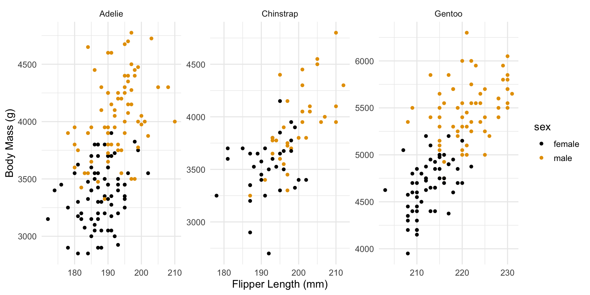
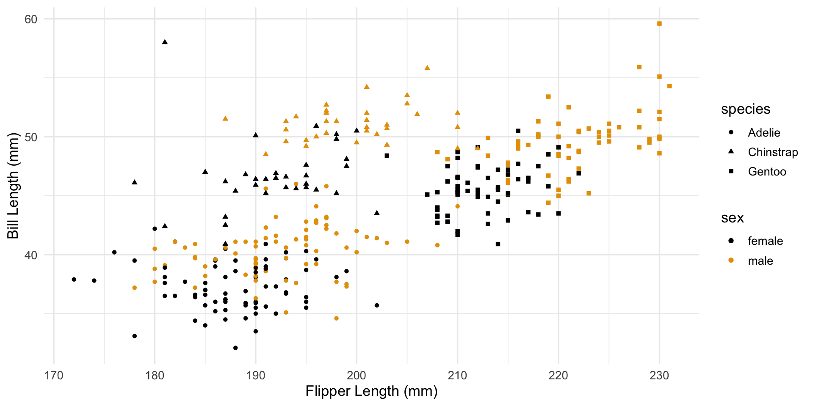
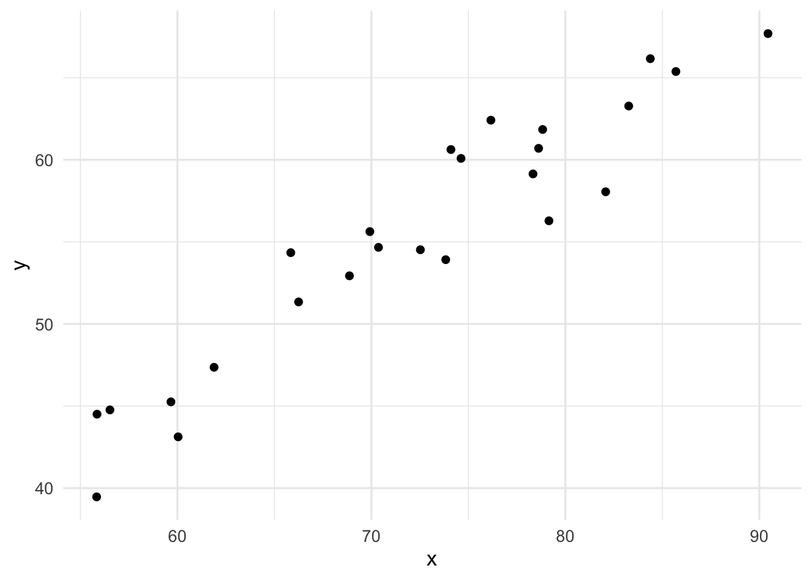
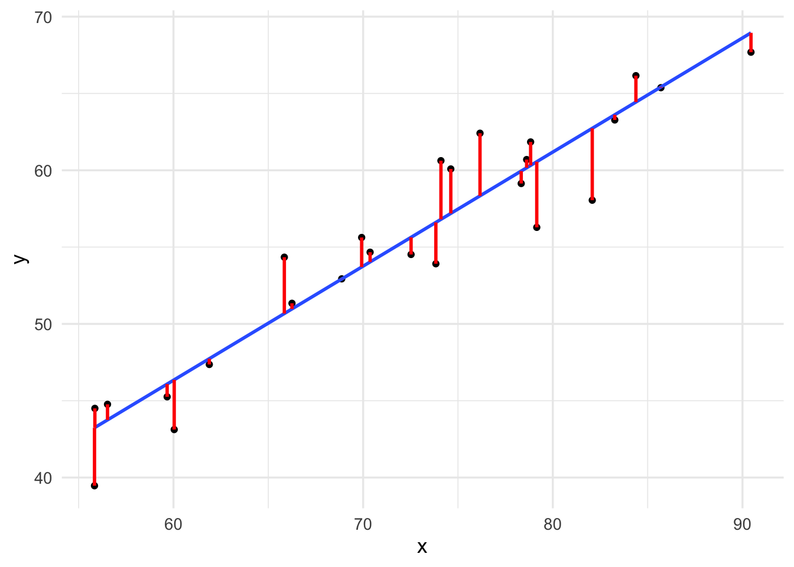

Lesson 7
Fundamental Concepts of Supervised Machine Learning
Learning Objectives
After this lesson, students will be able to:
Define supervised machine learning in general terms.
Distinguish between regression and classification problems.
Understand the concept of error and the significance of test versus training error.
Appreciate the trade-off between model flexibility and interpretability, and between bias and variance.
Describe the nearest neighbors, linear regression, and neural networks models for supervised machine learning.
Readings, etc.
Read Chapters 5, 6, 7, & 8 from from Data Science: A First Introduction (Timbers, Campbell, and Lee 2022). View book online.
Read Chapter 2 of An Introduction to Statistical Learning (Tibshirani, James, and Trevor 2017).
The following two video lectures are also recommended:
- Motivating problems for machine (statistical) learning. Watch video on YouTube.
- Supervised and unsupervised learning. Watch video on YouTube.
Overview
This lesson is essentially about modeling data. Specifically, we are interested to model data that is paired or labeled, where we view one or more variables as predictors and one variable as a corresponding response or label. Let’s consider a motivating example. The penguins data set available through either the modeldata package or the palmerpenguins package records observations on 344 penguins from three species of penguins collected from three islands in the Palmer Archipelago, Antarctica. Table 1 shows the first 10 rows of the data set.
| species | island | bill_length_mm | bill_depth_mm | flipper_length_mm | body_mass_g | sex |
|---|---|---|---|---|---|---|
| Adelie | Torgersen | 39.1 | 18.7 | 181 | 3750 | male |
| Adelie | Torgersen | 39.5 | 17.4 | 186 | 3800 | female |
| Adelie | Torgersen | 40.3 | 18.0 | 195 | 3250 | female |
| Adelie | Torgersen | NA | NA | NA | NA | NA |
| Adelie | Torgersen | 36.7 | 19.3 | 193 | 3450 | female |
| Adelie | Torgersen | 39.3 | 20.6 | 190 | 3650 | male |
| Adelie | Torgersen | 38.9 | 17.8 | 181 | 3625 | female |
| Adelie | Torgersen | 39.2 | 19.6 | 195 | 4675 | male |
| Adelie | Torgersen | 34.1 | 18.1 | 193 | 3475 | NA |
| Adelie | Torgersen | 42.0 | 20.2 | 190 | 4250 | NA |
One problem we might be interested in is to model the body mass of a penguin based on the three other body measurements and its sex and species. Here body mass would be our response variable and bill length, bill depth, flipper length, species, and sex would be our predictor variables. In this case, since the response variable is numerical, we say that we have a regression problem. Figure 1 illustrates this regression problem.

penguins data set.Instead, we might be interested to model the sex of a penguin based on its physical measurements and its species. In this case, since the response is categorical, we say that we have a classification problem. Figure 2 illustrates this classification problem.

penguins data set.Our approach to modeling data will be via supervised machine learning, also known as statistical learning that uses data to build mathematical models to model and gain insight from data. The methods of machine learning are currently very popular in data science for the role they play in predictive modeling but are also commonly used for inferential purposes. Machine learning is also a currently prominent approach to developing artificial intelligence technologies. Figure 3 illustrates the relationship between AI, machine learning, and deep learning. Of course, what one means by a “useful insight” is highly dependent on the domain of specialization or area of application. Thus, machine learning is an inherently interdisciplinary field that intersects with many disciplines such as computer science, data science, mathematics and statistics and a variety of other fields.

Supervised machine learning builds models to predict response values based on corresponding predictor values by using example data that comes as a source and target pair. Figure 4 illustrates the supervised learning paradigm.

In this lesson, we will learn the basic concepts of supervised machine learning. We will use the nearest neighbors algorithm to facilitate our understanding of the basic principles of supervised learning. This algorithm is a simple but useful machine learning algorithm. In future lessons, we will learn about additional commonly used supervised learning methods.
Introduction to Machine (Statistical) Learning
Machine learning or statistical learning generally refers to methods or tools that seek to derive insight or understanding from data by using models. Here by model we mean a mathematical or computational representation of some part of the real world. In machine learning, we fit or learn a model or class of models to data. The goal of fitting models is usually one of the following:
Prediction - using what is known or has been observed to make informed (hopefully accurate) claims about what we want to know or has yet to be observed.
Inference - using a sample to make informed (hopefully accurate) claims about a larger population. For example, we might want to know which predictors are associated with a response, or what is the relationship between the response and each predictor.
For an example of prediction, suppose that we are advertising experts working with a customer that sales video games. Our customer cannot directly control their sales but they can directly control their marketing by deciding how much to invest in advertising. Say for example that our customer has three ways to advertise: via YouTube, via podcasts, or via Spotify. We can use our past knowledge about how much our customer has spent i.e., their advertising budget and the corresponding sales to make predictions using a model about how sales will be in the future depending on how the company changes its advertising in each of the three media.
For an example of inference, suppose we want to know if caffeine consumption is associated with exam performance for students at the University of Scranton. We could collect data for a number of students on how much caffeine they’ve had before and exam and then record the corresponding exam performance. Here we probably aren’t interested to predict what grade someone will get based on consuming a certain amount of caffeine but rather we are interested in whether or not there is an association between caffeine consumption and exam performance. We could use a model to make inferences about this association.
While this course will only look at supervised learning, it’s worth taking a moment to point out that there are actually two prominent broad classes of machine learning models:
- Supervised - In supervised learning, data comes in pairs \((y_{i},{\bf x}_{i})\) where we view \({\bf x}_{i}\) (which may be a vector) as a predictor and \(y_{i}\) as a response. Often, We the predictors are something we can influence directly like the advertising budget from our earlier example while the response is something we don’t have direct control over like the sales from our example. Thus, there is an assumed functional relationship between predictors and the response of the form
\[ y = f({\bf x}) + \epsilon \]
where we think of \(f({\bf x})\) as the mean value for \(y\) viewed as a random variable and \(\epsilon\) as containing the variance of \(y\) so that \(E[\epsilon] = 0\).
We note that \(y\) may be numerical in which case we have a regression problem or it may be categorical in which case we have a classification problem.
- Unsupervised - In unsupervised learning, there is no response variable. Some common unsupervised problems include clustering and density estimation. Both of these essentially seek to discover a pattern in the data.
Figure 5 illustrates the distinction between supervised and unsupervised learning models.

In this course, we will focus on supervised learning and save discussions on unsupervised learning for future courses.
Fitting Supervised Models
Fitting a supervised learning model typically amounts to estimating the function \(f\) in the assumed relationship
\[ y = f({\bf x}) + \epsilon \] between the predictor and response variables. When we estimate \(f\) we denote the estimate by \(\hat{f}\). Then, we can use \(\hat{f}\) to predict the response for each predictor value \({\bf x}\) by computing
\[ \hat{y} = \hat{f}({\bf x}) \]
How do we estimate a function \(f\)? In machine learning, we use the data together with some algorithm to construct \(\hat{f}\). The general steps are:
Specify a class of functions from which to choose \(\hat{f}\).
Specify a loss function that measures how well a given \(\hat{f}\) fits the data. That is, the loss functions is a quantitative comparison between the observed response values and predicted response values. The loss function is often denoted by \(L(y,\hat{y}) = L(y,\hat{f}({\bf x}))\).
Find the \(\hat{f}\) that minimizes the loss function. Note that this involves solving an optimization problem.
Regression
Let’s consider an illustrative example where \({\bf x}\) represents the years of education of some individuals and \(y\) is the income they earn in their profession. Thus, both variables are numerical so we are dealing with a regression problem. We are assuming that there is a true but unknown functional relationship between the years of education and the income they earn.
The left panel of Figure 6 shows a scatter plot of our education versus income data while the right panel shows the data again but with a curve corresponding to the graph of a function \(\hat{f}\) that passes through the data.

How did we come up with the function \(\hat{f}\)? Basically, we minimized the residual error between our predicted and observed response. That is, for each response value \({\bf x}\) we minimized how far \(y=f({\bf x})\) can be from \(\hat{y}=\hat{f}({\bf x})\). There are three important points that need to be addressed before we can implement regression in a practical situation.
The set of all functions is too large to work with in practice so we must make some choices that allow us to narrow down the class of functions from which \(\hat{f}\) will be taken. For example, we could restrict to only linear functions, or only quadratic functions, or only polynomial functions. These classes of functions are easy to describe because these types of functions are uniquely described by a finite number of parameters. However, sometimes data can not be modeled well by, e.g., polynomials so more sophisticated non-parametric ways of describing classes of functions have been developed that allow for more flexible modeling.
We must decide on how we will define and measure error. That is, we must specify an appropriate loss function. For regression problems, a typical way to measure error is the squared-error. Referring back to the right side of Figure 6, we define the \(i\)-th residual \(r_{i}\) to be the vertical (signed) distance between the observed response value \(y_{i}\) and the corresponding predicted value \(\hat{y}_{i} = \hat{f}({\bf x}_{i})\). That is,
\[ r_{i} = y_{i} - \hat{y}_{i} \] Then the squared error (SE) is
\[ \text{SE} = \sum_{i=1}^{n}r_{i}^{2} = \sum_{i=1}^{n}(y_{i}-\hat{y}_{i})^{2} = \sum_{i=1}^{n}(y_{i} - \hat{f}({\bf{x}_{i}}))^{2} \]
In this case, we take \(\hat{f}\) to be the function from some specified class of functions such that it minimizes the corresponding SE.
Important Point: A main component of many if not most supervised machine learning problems is solving some kind of optimization problem. Usually when one speaks of a machine learning algorithm (or learning algorithm), what they are actually referring to is some algorithm that is used to solve an appropriate optimization problem.
- We have to distinguish between reducible error and irreducible error. No machine learning model will ever be perfect. Suppose that we have an estimate \(\hat{f}\) that yields a prediction \(\hat{y} = \hat{f}({\bf x})\). Since in reality the response is a random variable
\[ y = f({\bf x}) + \epsilon \] we have
\[ \begin{align*} \text{E}[(y - \hat{y})^{2}] &= \text{E}[(f({\bf x}) + \epsilon - \hat{f}({\bf x}))^2] \\ &= \text{E}[((f({\bf x}) - \hat{f}({\bf x})) + \epsilon)^2] \\ &= \text{E}[(f({\bf x}) - \hat{f}({\bf x}))^2 - 2\epsilon (f({\bf x}) - \hat{f}({\bf x})) + \epsilon^2] \\ &= \text{E}[(f({\bf x}) - \hat{f}({\bf x}))^2] - 2(f({\bf x}) - \hat{f}({\bf x}))\text{E}[\epsilon] + \text{E}[(\epsilon - 0)^2] \\ &= \text{E}[(f({\bf x}) - \hat{f}({\bf x}))^2] + \text{Var}[\epsilon] \end{align*} \]
By choosing a good enough family of functions or a good enough learning algorithm we can reduce \(\text{E}[(f({\bf x}) - \hat{f}({\bf x}))^2]\) as much as we want. This corresponds to the reducible error. However, we have no control over \(\text{Var}[\epsilon]\) and this corresponds to the irreducible error.
Classification
For classification problems in supervised machine learning, the response variable is categorical. Figure 7 illustrates this, showing a scatter plot of data where coloring is used to distinguish the data points as belonging to one of two different classes.

For classification problems, our goal is still to estimate a functional relationship of the form \(y = f({\bf x}) + \epsilon\). However, we can no longer measure error using the squared error because the response values are not numerical. A common method for measuring error in classification problems is classification error (CE) defined by
\[ \text{CE} = \sum_{i=1}^{n}I(y_{i} \neq \hat{y}_{i}) \]
where \(I\) is the indicator function that is equal to 1 whenever \(y_{i} \neq \hat{y}_{i}\) and equal to 0 whenever \(y_{i} = \hat{y}_{i}\). Essentially, CE counts the number of misclassifications.
Similar to regression, fitting a classification model involves finding a function \(\hat{f}\) from some specified class of functions such that the corresponding CE is minimized.
Note that it is possible to convert a regression problem to a classification problem by binning or discretizing the response variable in some way.
Complexity Vs. Interpretability
Another issue that needs to be taken into account when fitting models is the tradeoff between how easy it is to interpret a model versus the maximum degree of accuracy for the model. Figure 8 illustrates this through a representation of the tradeoff between model flexibility and the degree of interpretability of the model. The more flexible the model, the easier it will be to reduce the reducible error. However, highly flexible models tend to be difficult to interpret because they involve many more parameters or possess other types of complexity.

Training Error Vs. Test Error
When we fit a model to data, say by minimizing the error the resulting estimate function we get depends on the data used to fit the model. We refer to this data as the training data and the corresponding error as the training error. By choosing a sufficiently flexible set of functions from which to fit to the data, we can make the training error as small as we want. This might seem like a great thing, but there is a major problem with it.
Suppose we want to use a model to make predictions about future unseen values of our predictor \({\bf x}\). If a model is fit too well to the training data, then in general it tends not to be very good at making accurate predictions for future values. One says that models that are overfit to the training data are poor at generalization.
How do we build models that generalize well and avoid overfitting? A common approach is to separate data into a training set that is used to fit a model and a test set which is used to assess how well the models generalizes to unseen data via the test error. Figure 9 shows sample data are several different model fits of varying complexity. The right panel shows the corresponding training and test error for each of the different models. The dashed horizontal line is the minimum possible test error. We see that the most complex model massively overfits the training data.

While the training/test set approach to fitting accurate models while avoiding overfitting is very good in principle, there are some practical limitations. For example,
How do we know the training data is sufficiently representative?
What if we don’t have a sufficiently large data set to split into a training and a test set?
How do we know what the minimum possible test error is?
We will spend a lot of time later talking more about these issues and ways to deal with them.
The Bias-Variance Trade-Off
Referring back to Figure 9, notice the distinct U-shape in the curve for the test error. This is more than just a curiosity, it is the result of another type of trade-off known as the bias-variance trade-off.
Let’s try to get a sense for this starting with some intuition. Suppose we having a regression problem with a single predictor. If we restrict to the class of linear functions, that is functions with graph that is a straight line in the plane, then any such function is uniquely specified by two parameters, the slope and intercept. Intuitively, such as model is highly biased because it’s going to make very rigid predictions. However, linear functions have low variance in the sense than models fit to similar data will have very similar slope and intercept values. On the other hand, a cubic polynomial being described uniquely by four parameters is much less biased than a linear function but will have higher variance.
It is outside the scope of this course, but it can be shown that the expected squared error for an observed value \({\bf x}_{0}\) can be decomposed as follows:
\[ \text{E}[(y_{0} - \hat{f}({\bf x}))^2] = \text{Var}(\hat{f}({\bf x}_{0})) + [\text{Bias}(\hat{f}({\bf x}_{0}))]^2 + \text{Var}(\epsilon) \]
We refer to the first two terms as
the variance of \(\hat{f}({\bf x}_{0})\)
the squared bias of \(\hat{f}({\bf x}_{0})\)
Figure 10 illustrates this formula.

Important: What you should keep in mind as we proceed through the course is the following:
Simple models tend to have high bias but much lower variance.
Complex models tend to have lower bias but much higher variance.
Anytime you choose a particular modeling approach for a specific application or data set, you should take into account the bias-variance trade-off.
Examples of Supervised Learning
Nearest Neighbors
The nearest neighbors approach to supervised machine learning is a very simple and intuitive approach to modeling. For example, suppose we have a data set consisting of a single predictor \({\bf x}\) and a response \(y\). The nearest neighbors approach to regression is to predict the response for a new value of \({\bf x}\) by averaging the responses for the \(k\) nearest values of \({\bf x}\) in the training data. Nearest neighbors can also be used for classification problems. In this case, we predict the class of a new value of \({\bf x}\) by taking a majority vote of the classes of the \(k\) nearest values of \({\bf x}\) in the training data.
Let’s proceed to an online interactive demo for nearest neighbors applied to a classification problem. View the demo.
This GitHub repository contains code in R that implements nearest neighbors for both regression and classification problems. Let’s go through this together.
Linear Regression
Recall that in a supervised learning problem, we assume that there is a relationship between the predictor and response variables of the form:
\[ y = f({\bf x}) + \epsilon \]
and then we seek to find a function \(\hat{f}\) from some specified class of functions that does a good job in approximating \(f\). Let’s study this problem in more detail but in a very simple setting. Specifically, we will assume that \({\bf x}\) and \(y\) are both single numerical variables and that \(f\) is linear. Then writing everything out in detail, we assume that there are (true but unknown) numbers \(\beta_{0}\) and \(\beta_{1}\) such that
\[ y = \beta_{0} + \beta_{1} x + \epsilon \] for all values of \(x\) and \(y\). Recall that we are assuming that \(\text{E}[\epsilon] = 0\) so \(\epsilon\) is a random variable with expected value (or mean) equal to zero.
If we restrict ourselves to the class of single-variable linear functions, then finding an approximation to \(f(x) = \beta_{0} + \beta_{1} x\) is equivalent to finding values \(\hat{\beta}_0\) and \(\hat{\beta}_{1}\) so that
\[ \hat{f}(x) = \hat{\beta}_{0} + \hat{\beta}_{1} x \approx f(x) = \beta_{0} + \beta_{1} x \]
Thus, this would be a parametric model since any candidate approximating function is uniquely specified by specifying the values for the parameters \(\hat{\beta}_0\) and \(\hat{\beta}_{1}\). Note that this is in contrast to nearest neighbors which is nonparametric.
Figure 11 shows the plot of data that has been generated by a relationship of the form \(y = \beta_{0} + \beta_{1} x + \epsilon\). You should examine the code used to create or simulate the data in this example and see how it relates to the expression \(y = \beta_{0} + \beta_{1} x + \epsilon\).
Code
set.seed(1287)
N <- 25
x <- rnorm(N,mean=72,sd=12)
y <- 1.2 + 0.75 * x + rnorm(N,sd=2)
xy_data <- tibble(x=x,y=y)
xy_data %>%
ggplot(aes(x=x,y=y)) +
geom_point()
From a (supervised) machine learning perspective, fitting a line to such data means “learning” the values of \(\hat{\beta}_0\) and \(\hat{\beta}_{1}\) from the data. How do we learn \(\hat{\beta}_0\) and \(\hat{\beta}_{1}\)? One way to do this is to minimize an appropriate loss function which is a function that provides a measure of error between the observed response values and the response values predicted by the model.
Figure 12 shows the same data as in Figure 11 but where we have added a best fit line as well as all the residual values. One way to learn the values for \(\hat{\beta}_0\) and \(\hat{\beta}_{1}\) is to minimize the squared error for the residuals.
Code
fitted_linear_model <- lm(y ~ x, data=xy_data) %>%
augment()
fitted_linear_model %>%
ggplot(aes(x=x,y=y)) +
geom_point() +
geom_smooth(method="lm",se = FALSE) +
geom_segment(aes(x = x, y = y, xend = x, yend = .fitted),
color="red",lwd=1)
Notice that we can write our loss function, that is, the squared error for the residuals as a function of two variables \(L(\beta_{0},\beta_{1})\) defined by
\[ L(\beta_{0},\beta_{1}) = \sum_{i=1}^{n}(y_{i} - \beta_{0} - \beta_{1}x_{i})^2 \]
where \(n\) is the number of observations in the data set. To fit our model, we need to find the values of \(\hat{\beta}_0\) and \(\hat{\beta}_{1}\) that minimize \(L(\beta_{0},\beta_{1})\).
Multiple Linear Regression
Suppose that we have data of the form \((y_{i},{\bf x}_{i}) = (y_{i},x_{i1},x_{i2},\ldots , x_{ip})\) so that there are \(p\) predictor variables. A multiple linear regression model takes the form
\[ y = \beta_{0} + \beta_{1}{\bf x}_{1} + \beta_{2}{\bf x}_{2} + \cdots + \beta_{p}{\bf x}_{p} + \epsilon \] Multiple linear regression is a significant generalization of simple linear regression because it not only allows us to account for multiple predictor variables, but also allows us to account for certain types of nonlinearity and also predictor variables that are categorical. This is because:
The “linear” part of linear regression refers to linearity with respect to the coefficients \({\bf \beta}\).
We can use dummy variables to represent categorical predictor variables.
Neural Networks
Neural networks are a class of machine learning models that are inspired by the structure of the brain. They are composed of a series of layers of nodes or “neurons” that are connected to each other. Each artificial neuron is a simple computational unit that takes in a set of inputs, performs a computation, and produces an output. The output of one neuron is then used as the input to the next neuron. The first layer of artificial neurons is called the input layer and the last layer of neurons is called the output layer. The layers in between the input and output layers are called hidden layers. The number of hidden layers in a neural network is called the depth of the network. The number of neurons in each layer is called the width of the network. Figure 13 shows a neural network with one hidden layer consisting of 5 neurons or nodes.

Neural networks are conceptually simple but the mathematical details can be confusing. The general idea is that a neural network takes an input of \(p\) predictor variables \(X = (X_{1},X_{2},\ldots , X_{p})\) and builds a nonlinear function \(f(X)\) to predict the response \(Y\). What distinguishes neural networks from other nonlinear methods is the particular structure of the model function \(f\).
Exploring a Neural Network Interactively
In order to develop some intuition, we will start by exploring an interactive visualization of a neural network via the Neural Network Playground website. Visit the Neural Network Playground.
The visualization allows you to create a neural network and then train it on a data set. The data set can be a classification problem or a regression problem. The visualization allows you to change the defining components of a neural network such as activation function, the number of hidden layers, the number of neurons in each layer.
References
Tibshirani, Hastie Robert, Gareth James, and Daniela Witten Trevor. 2017. An Introduction to Statistical Learning. springer publication.
Timbers, Tiffany, Trevor Campbell, and Melissa Lee. 2022. Data Science: A First Introduction. CRC Press.
Expand for Session Info
─ Session info ───────────────────────────────────────────────────────────────
setting value
version R version 4.3.1 (2023-06-16)
os macOS Sonoma 14.0
system aarch64, darwin20
ui X11
language (EN)
collate en_US.UTF-8
ctype en_US.UTF-8
tz America/New_York
date 2023-10-25
pandoc 3.1.8 @ /opt/homebrew/bin/ (via rmarkdown)
quarto 1.3.450 @ /usr/local/bin/quarto
─ Packages ───────────────────────────────────────────────────────────────────
package * version date (UTC) lib source
broom * 1.0.5 2023-06-09 [1] CRAN (R 4.3.0)
dials * 1.2.0 2023-04-03 [1] CRAN (R 4.3.0)
dplyr * 1.1.3 2023-09-03 [1] CRAN (R 4.3.0)
forcats * 1.0.0 2023-01-29 [1] CRAN (R 4.3.0)
ggplot2 * 3.4.4 2023-10-12 [1] CRAN (R 4.3.1)
ggthemes * 4.2.4 2021-01-20 [1] CRAN (R 4.3.0)
infer * 1.0.5 2023-09-06 [1] CRAN (R 4.3.0)
ISLR2 * 1.3-2 2022-11-20 [1] CRAN (R 4.3.0)
kableExtra * 1.3.4 2021-02-20 [1] CRAN (R 4.3.0)
lubridate * 1.9.3 2023-09-27 [1] CRAN (R 4.3.1)
modeldata * 1.2.0 2023-08-09 [1] CRAN (R 4.3.0)
parsnip * 1.1.1 2023-08-17 [1] CRAN (R 4.3.0)
purrr * 1.0.2 2023-08-10 [1] CRAN (R 4.3.0)
readr * 2.1.4 2023-02-10 [1] CRAN (R 4.3.0)
recipes * 1.0.8 2023-08-25 [1] CRAN (R 4.3.0)
rsample * 1.2.0 2023-08-23 [1] CRAN (R 4.3.0)
scales * 1.2.1 2022-08-20 [1] CRAN (R 4.3.0)
sessioninfo * 1.2.2 2021-12-06 [1] CRAN (R 4.3.0)
stringr * 1.5.0 2022-12-02 [1] CRAN (R 4.3.0)
tibble * 3.2.1 2023-03-20 [1] CRAN (R 4.3.0)
tidymodels * 1.1.1 2023-08-24 [1] CRAN (R 4.3.0)
tidyr * 1.3.0 2023-01-24 [1] CRAN (R 4.3.0)
tidytuesdayR * 1.0.2 2022-02-01 [1] CRAN (R 4.3.0)
tidyverse * 2.0.0 2023-02-22 [1] CRAN (R 4.3.0)
tune * 1.1.2 2023-08-23 [1] CRAN (R 4.3.0)
workflows * 1.1.3 2023-02-22 [1] CRAN (R 4.3.0)
workflowsets * 1.0.1 2023-04-06 [1] CRAN (R 4.3.0)
yardstick * 1.2.0 2023-04-21 [1] CRAN (R 4.3.0)
[1] /Library/Frameworks/R.framework/Versions/4.3-arm64/Resources/library
──────────────────────────────────────────────────────────────────────────────
Reuse
CC BY-NC-SA 4.0